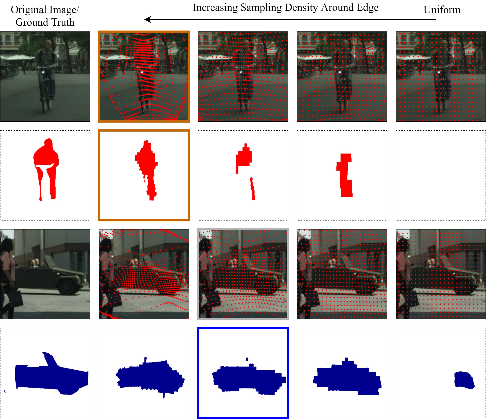
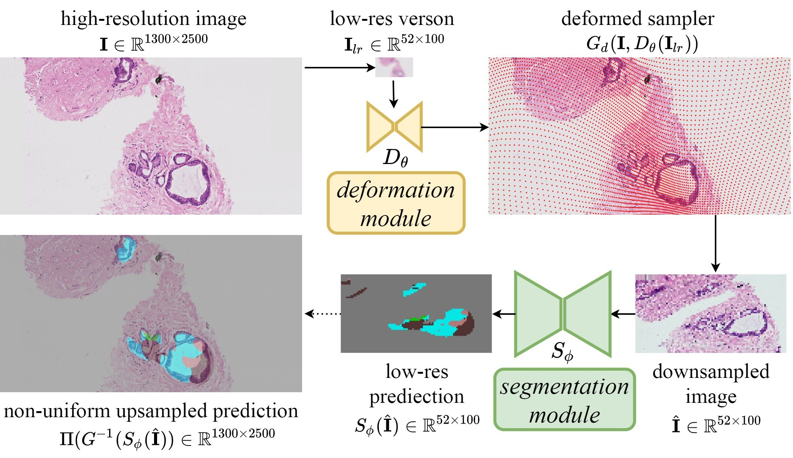
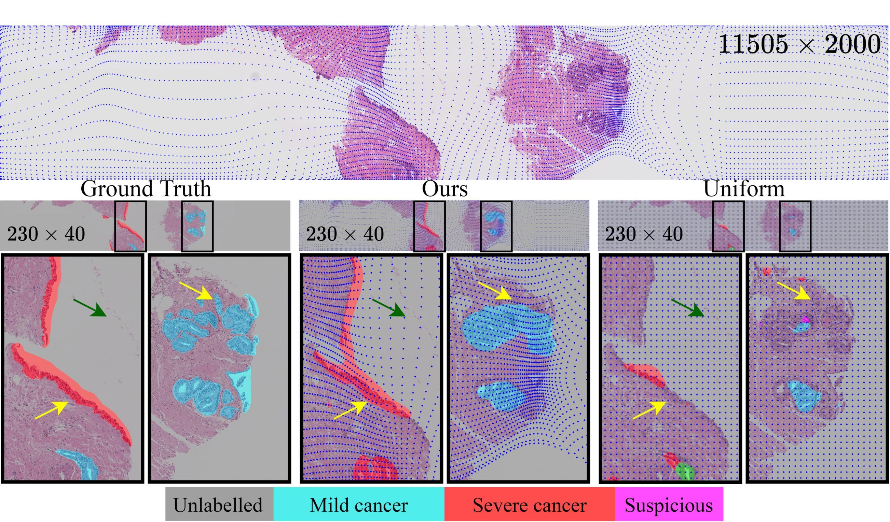
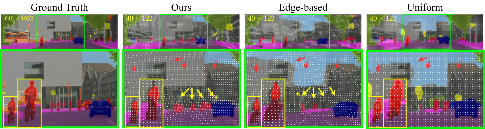
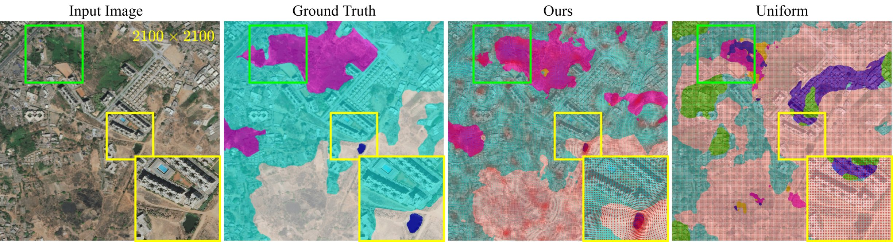

Figure: Semantic segmentation with learnt deformed downsampling on each slide of ultra-high resolution cancerous histology image.
Figure: Semantic segmentation with learnt deformed downsampling on each slide of ultra-high resolution aerial image from DeepGlobe dataset.
Figure: Semantic segmentation with learnt deformed downsampling on each frame of Cityscapes video demo (stuttgart_00).
Many computer vision systems require low-cost segmentation with deep learning either because of the enormous size of images or limited computational budget. Common solutions uniformly downsample the input image to meet memory constraints, assuming all pixels are equally important. However this assumption does not hold when segmentation difficulty varies spatially, and hence compromises the performance. We propose learning the spatially varying downsampling strategy jointly with segmentation offers advantages in segmenting large images with a limited computational budget. We formulate the problem as learning the sampling density distribution depends on the local context. To avoid over-sampling at trivial regions like the background, we propose an edge-based sampling target to regularise training. Our experiments show that this method consistently learns sampling locations preserving more information. On benchmarks, we demonstrate superior segmentation accuracy and cost-performance trade-off compared to both uniform downsampling and two recent downsampling methods.
We demonstrate the limitation with handcrafted downsampling by simulating a set of samplers each with different sampling density distribution as each column. Ground truth and predictions with each sampler for two example classes are illustrated and the best-performed sampler for each class is highlighted with a coloured border. Sampling locations are masked on the original image in red dots. Motivational experiments are performed on Cityscapes with a downsampled size of 64×128 given input of 1024×2048.

Figure: Optimal sampling density varies over locations.
Motivated by the above finding, we propose a method for learning to downsample large images for better low-cost segmentation. We adapt sampling to the memory budget according to the difficulty of pixel-level segmentation by deformation module, a lightweight end-to-end learnable "downsampler" that can be flexibly integrated into existing semantic segmentation architectures.

Figure: Architecture schematic.
We evaluate the performance of our deformed downsampling approach on three datasets from different domains, against "uniform" downsampling and the handcrafted "edge-based" downsampling. We demonstrate our jointly trained method generalises sampling better especially when label edges are less informative and consistently lead to a better cost-performance trade-off.

Figure: Qualitative example on histology image. Top: our learnt downsampling (blue dots on the images) adapts sampling density according to the semantic importance at each location. Middle: ground truth and segmentations performed on differently downsampled low-resolution images. Bottom: Compare to uniform downsampling, our deformed downsampling samples more densely at difficult regions (yellow arrows) and ignore image content that does not contribute (green arrows) thereby leading to more accurate segmentation.

Figure: Qualitative example on Cityscapes. Segmentation is performed on 16 times downsampled images (at each dimension). Predictions are masked over and sampling locations are shown in white dots. Yellow/ red arrows indicated regions with denser/ sparser sampling helped to segment rider (red)/ sky (blue) classes, respectively.

Figure: Qualitative example on DeepGlobe. Segmentation performed on 8 times downsampled images (at each dimension). Predictions are masked over and sampling locations are shown in red dots. Yellow/ green boxed region indicated regions with denser/ sparser sampling helped segmenting water (blue)/ forest (purple) classes, respectively.
@article{jin2021learning, author = {Jin, Chen and Tanno, Ryutaro and Mertzanidou, Thomy and Panagiotaki, Eleftheria and Alexander, Daniel C}, title = {{Learning to Downsample for Segmentation of Ultra-High Resolution Images}}, journal = {arXiv preprint arXiv:2109.11071}, year = {2021} } }
For questions / comments, reach out to: Chen Jin